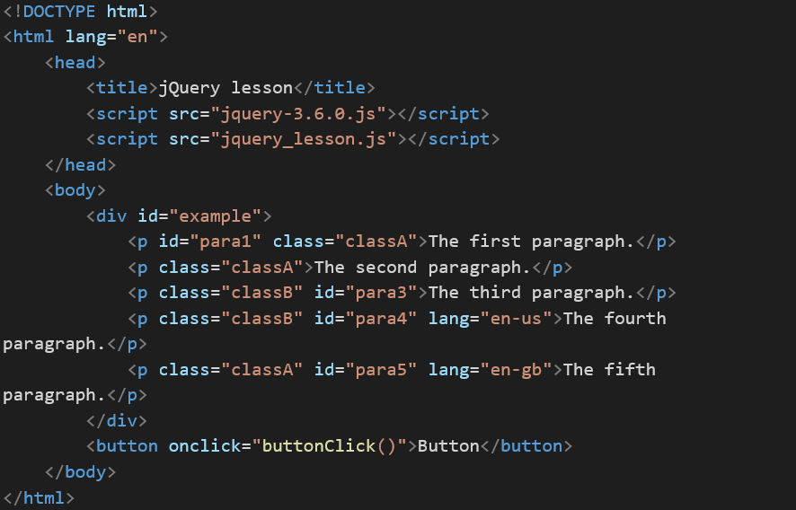
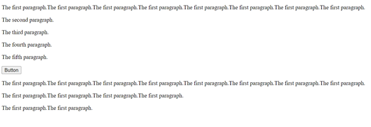
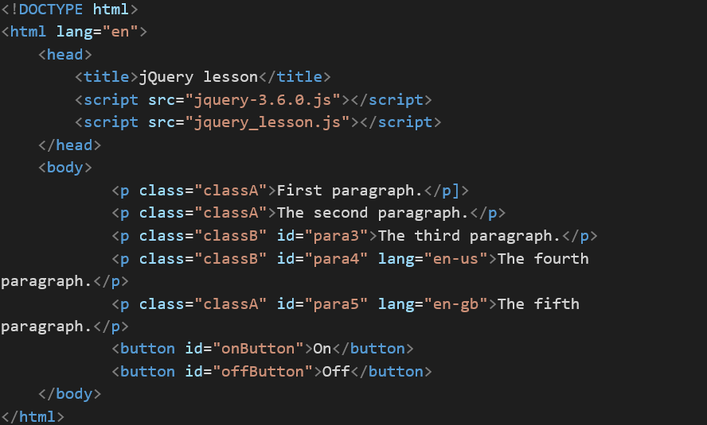
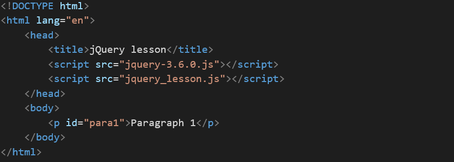
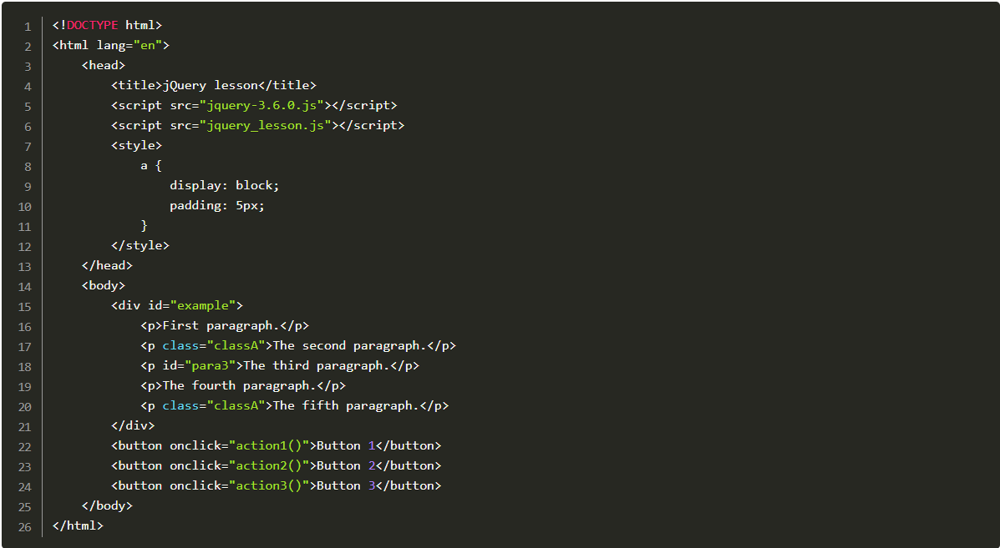

jQuery is one of the most popular, free, open-source JavaScript libraries, enabling us to handle everyday
tasks with significantly smaller code. It provides us with multiple features from the topics we learned in
previous classes, such as HTML/DOM manipulation, CSS manipulation and animations. It also smooths
cross-browser development issues, as it runs the same in all major browsers.
In this lesson, we’ll learn how to set up the jQuery library. We’ll then focus on jQuery basics, such as
selecting the correct element with the CSS selector and getting connected to this element with our
document’s tree structure.
Even though there are many other JavaScript libraries, jQuery is probably the most popular and extendable.
We can even create our plugins with it, but we won’t learn about this in this lesson as it’s a more advanced
topic. This is why jQuery is used on the web by some of the biggest companies, such as Google, Microsoft,
IBM and Netflix.
learning outcomes
In this lesson, we are covering the following knowledge learning outcomes:
The candidate has knowledge of concepts, processes, and tools for developing the JavaScript language.
In this lesson, we are covering the following skill learning outcome:
The candidate can find information and material relevant to extending JavaScript functionality
in static web pages through third-party libraries.
In this lesson, we are covering the following general competence learning outcome:
The candidate can carry out work based on the needs of a junior JavaScript developer.
Activity 2.1
In the following HTML file:

Make our button double the first paragraph text and insert a copy of it after the button. After clicking
the button three times, we should see the following result:

The first paragraph.
The second paragraph.
The third paragraph.
The fourth paragraph.
The fifth paragraph.
Activity 2.2
In the following HTML file:

Create jquery_lesson.js file with:
An On button with an event that, when clicked, changes all paragraphs’ font size to 30px.
An Off button with an event that, when clicked removes the styling added by the On button event.
The first paragraph.
The second paragraph.
The third paragraph.
The fourth paragraph.
The fifth paragraph.
Activity 2.3
In the following HTML file:

Make our paragraph (paragraph 1) slowly fade to 0.1 on hover.
paragraph 1
paragraph 2
The Task
TIn this lesson, we learnt about more advanced jQuery features, such as creating new elements and
modifying existing ones, adding events, effects and animations. In this task, you need to develop
functionalities for three buttons based on the following HTML file:

Button 1 – changes all paragraphs into links linking to https://youtube.com but
keeping their current text.
Button 2 – adds event to all links, making their font size 20px on hover.
Button 3 – hides all paragraphs with the fade-out animation and all buttons with the slide-up
animation.